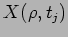

Description of SPIKE [Johnston and Miller, 1994]. Initial selection heuristic - minconflicts, constraint propagation, repair heuristic(s) etc. - in the case of SPIKE a conflicting activity is moved to a point where it producues the smallest number of conflicts with other activities. List of quality metrics for good schedule - number of observations, total observing time, summed degree of preference for scheduled observations.
[Muscettola, 1992] describes a system (Conflict Partition scheduling or CPS) for solving scheduling problems by identifying regions of the search space where bottleneck conflicts occur and posting constraints to move the search away from these regions where solutions are unlikely to be found. A bottleneck is defined as a neighbourhood in the search space where the time assignment strategy generates a maximum of inconsistency. These are detected by running a number of stochastic simulations to generate resource allocations with time flexibility. The bottlenecks are identified as those points where the most resource contention occurs and additional sequencing constraints are posted to reduce the contention. They employ two measures of contention - token demand
measures how much a token or task relies on a time slot by counting the number of simulations in which was asssigned to , resource contention
 measures how many tokens are competing for a resource at time  by counting the number of simulations in which is requested during
by counting the number of simulations in which is requested during  . Simulation uses various variable and value ordering heuristics - FTD, BTD, RVS - DETAILS. Conflict resolution involves - (see their FIG-1 on p5 for algorithm). brief description (esp CPS) - (may not use this list just salient points).
. Simulation uses various variable and value ordering heuristics - FTD, BTD, RVS - DETAILS. Conflict resolution involves - (see their FIG-1 on p5 for algorithm). brief description (esp CPS) - (may not use this list just salient points).
They test against Microboss [Sadeh, 1991] and minconflicts iterative repair [Minton et al., 1992]and claim it is better (see the conclusions).
The MicroBOSS scheduler is described in [Sadeh, 1991] - uses lookahead technique (describe) to work out probabilistic demand profile (Section 3 of article) - contention peaks.
[Zweben et al., 1994] describe the GERRY system for scheduling space shuttle ground operations. They define 3 types of constraint:-
. A weighted penalty function is used to measure the cost of constraint violation. Their repair procedure considers each type of constraint seperately and handles repair of of each type per cycle before moving onto the next cycle. In order to avoid trapping at local optima in the search space they employ simulated annealing to determine acceptance of a newly generated schedule. At each iteration the cost of the current schedule  is compared to the best so far and is accepted with a probability
where
is compared to the best so far and is accepted with a probability
where  is the annealing temperature which is cooled during the search. To resolve resource constraints tasks are selected for repair using 3 heuristic criteria
is the annealing temperature which is cooled during the search. To resolve resource constraints tasks are selected for repair using 3 heuristic criteria
. The results of these metrics are scored and a task selected for the move. State constraints are repaired using a selection of 5 methods in priority order which involve moving the affected task and/or adding achiever tasks into the schedule before the affected task to set the variable appropriately. The GERRY scheduler was found to be very effective in the chosen domain and was incorporated into the NASA Ground Processing Scheduling System (GPSS) an interactive tool for scheduling repair and refurbishment of the space shuttles between missions.
[Smith, 1995] describes the OPortunistic Intelligent Scheduler (OPIS) system. This introduces multi-perspective scheduling in which a number of complimentary schedule repair techniques are employed under the supervision of a Top Level Manager (TLM) and working through a common blackboard representation of the current solution and constraints. External events (changes to requirements, feedback from execution) are fed into the blackboard via model update agents. Conflict classes are defined relative to a number of conflict metrics including:- conflict duration, conflict size, resource idle time, upstream slack, projected lateness. A number of agents analyse the conflicts which are then matched to fuzzy behavioural profiles. Schedule repair agents are then selected to apply an appropriate repair heuristic suited to the character of the conflicts. e.g. for a problem with HIGH value of conflict duration and LOW value of variance in projected lateness coupled with HIGH value of idle time the order-scheduling heuristic is chosen which revises the sequencing of contiguous operations. In the trade-off between opportunistic improvement and non-disruption to current baseline OPIS is biased towards the later though this is a function of the anaiysis and repair heuristics chosen - see later under OZONE and DITOPS and AMC papers. (Performance notes...)
(Note: useful architecture - comaprison to DM concept).
Work on DITOPS [Smith et al., 1996] an air transport scheduler led to the extension of OPIS into a pluggable object oriented framework OZONE (Object Oriented OPIS = ). This has since been used to implement a number of scheduling systems. .
For scheduling inflight refueling and transport missions the AMC BarrelMaster scheduler [Smith et al., 2004] was developed using OZONE. In its normal mode of operation the scheduler has to assign times to new missions into an already built schedule. The search strategy AssignMission is based on a triple of:-
The mission requirements generally lead to heavy over-subscription of resources so various relaxation regimes can be considered:- over-allocation of 'reserved' resources, allowable delays, mission combinations, priority pre-emption (bumping). These are handled by selection of different pluggable combinations of these procedures. e.g. has implementations and , similarly there are several versions of and . A procedure CombineMissions allows pairs of missions to be combined to attempt a reduction in resource usage, this can be applied recursively to maximize the reduction in overall flying time required. The primary goal of the AMC Allocator is to assign the most high priority missions, often lower priority missions will be left out even though some assigned high priority missions with greater flexibility are included - an incremental optimization procedure MissionSwap can be applied to try and insert unassigned low priority missions into the schedule by retracting existing commitments and reassigning to free up slots.
[Kramer and Smith, 2003] describe 3 heuristics which can be used to select the tasks for retraction:-
. In [Kramer and Smith, 2004] they extend this technique to minimize disruption to the existing schedule and to speed up the process by search tree pruning. (task pruning - interval pruning - depth bounded search / biased stochastic retraction - VBSS = ACO - defer to that section or see.Sect. XXX?)...
DITOPS (Smith and Sycara) based on OZONE.. other paper also under integration of S+P.
in situations of detected constraint conflict an analysis procedure computes a set of metrics, some of which estimate the severity of the problem and some of which characterize the looseness or tightness of time and capacity constraints in the local 'neighbourhood' of the schedule that contains the conflict.
[Rabideau et al., 1999] describes work by NASA JPL on the ASPEN scheduling framework. This is a constraint based search/optimization system intended for spacecraft operations scheduling. During the constraint satisfaction cycle activities are slotted into the schedule and conflicts detected. The system then classifies these conflicts into a large set depending on the type of constraint broken or the type of resource bottleneck. A prioritized sequence of repair heuristics is then selected in turn to attempt a repair which moves closer to satisfycing. (describe algorithm here? or leave to optimizing para).
ASPEN allows the specification of a number of search heuristics to be slotted in at decision points in the algorithm - some generic ones are described
.
[Rabideau et al., 2000] moves on to describe an extension to ASPEN to allow interleaved repair and optimization using experts - these are software components implementing heuristic operations an expert is a link between changes in the plan and the change in quality.
A number of classes of user preferences are defined, some acting on a local level, others globally. These specify a mapping from local variables to scoring metrics - an example given is of a preference on the start time of one activity relative to the preceding one centred on a preferred time gap and decreasing monotonically either side within cutoff limits - basically means I would like a gap of but will be happy with any gap from to  .
.
Improvement experts include:-
.
In the optimization phase a monotonic increasing assumption is made - i.e. only make (local) changes which will improve globally. A varibale order heuristic selects either the lowest scoring preference or the one with the highest potential gain - .
In order to improve overall performance an adaptive noise mechanism following [Hoos, 2002] has been implemented for ASPEN [Fukunaga et al., 2004] - this was added to the repair selection heuristic above - basically if improvement rate stagnates do some random stuff then after improvement back off but faster
 parameters... XXXresultsXXX and EO-1 application.
parameters... XXXresultsXXX and EO-1 application.
The CASPER system [Chien et al., 1999,Chien et al., 2000] was designed as a soft, realtime version of ASPEN to act as a framework for dynamic replanning - the concepts of continuous planning, execution and replanning and incremental plan extension. Plan must be continuously modified in light of changing operating context. It advocates a hierarchic system of planning - at higher levels more reasoned plans over long time scales, at lower levels short time scales, more reactive (NOTE: compare Brookes subsumptive architecture).
CASPER's represents the 'world' at a given planning horizon as (current goal set, plan, current exec state, model of predicted states). Updates to any of (goal set, current exec state, horizon (i.e. just time advancing)) causes a replanning iteration - changes are posted, effects propagated - including conflict identification, plan repaired and new working plan results (copy of their FIG7).
[Chien, 1998], Benefits -(responsiveness to sudden changes in environment, predictive modelling errors reduced due to continuous updating, fault protection moved from exec layers working on very short time scales, reduced distinction between PSE due to layering??). Currently the system can only replan at activity boundaries - unable to model effects of interrupted activities. Extension to include (plugin) goal achievement modules (GAMs) - experts at solving specific types of conflict - e.g. spacecraft attitude conflicts - XXXlook for newer paper on these- context DS-4XXX
XXXDetails of some NASA application areasXXX.